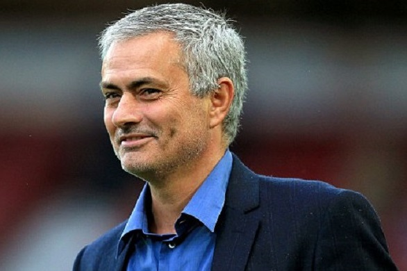

Pada tanggal 1 Juni 2009, Florentino Pérez kembali menjadi presiden Real Madrid dan bertahan sampai saat ini.Pérez melanjutkan tradisinya mengontrak pemain bintang dengan membeli Kaká dari AC Milan dan kemudian membeli Cristiano Ronaldo dari Manchester United yang memecahkan rekor transfer dengan harga 80 juta pound sterling.
José Mourinho mengambil alih sebagai manajer pada Mei 2010. Pada April 2011, kejadian aneh terjadi, untuk pertama kalinya, empat Clásicos itu harus dimainkan dalam rentang delapan belas hari. Yang pertama adalah perlengkapan untuk pertandingan Liga pada tanggal 17 April (yang berakhir 1-1 dengan gol penalti untuk kedua belah pihak), Copa del Rey (yang berakhir 1-0 untuk Madrid), dan kontroversial leg kedua semifinal Liga Champions pada 27 April dan 2 Mei (3-1 kekalahan agregat) ke Barcelona.
Clasico pertama kali melihat Cristiano Ronaldo mendapatkan gol pertamanya melawan Barcelona karena penalti yang diberikan kepada Madrid setelah pelanggaran ke Marcelo. Final Copa del Rey memberi Real Madrid gelar pertama di bawah Mourinho dengan sundulan Cristiano Ronaldo di perpanjangan waktu. Semifinal Liga Champions adalah mungkin yang paling kontroversial dari empat pertandingan, dengan pengusiran Pepe pada leg pertama di Santiago Bernabéu, setelah diduga "tantangan berbahaya" untuk bek Barcelona Daniel Alves. Alves dilakukan dalam tandu "tidak dapat berjalan", tapi setelah Pepe ditunjukkan memerah, Alves datang berlari kembali ke lapangan dalam hitungan detik. Setelah Pepe yang mengirimkan dari pelatih Jose Mourinho juga diusir, menerima denda dan larangan lima pertandingan. Pertandingan ini sama juga kontroversial oleh gelandang Barcelona Sergio Busquets yang ditangkap pada video mengatakan apa yang tampak seperti cercaan rasial seharusnya Madrid bek kiri Marcelo. Leg kedua tidak kontroversial sebagai yang pertama, dengan mungkin pengecualian tujuan dibatalkan untuk Gonzalo Higuaín, setelah Cristiano Ronaldo dianggap telah mengotori Javier Mascherano sebagai akibat dari pelanggaran terhadap Ronaldo oleh Gerard Piqué.
Di La Liga musim 2011-12, Real Madrid memenangkan liga, rekor waktu 32 dalam sejarah La Liga dan menyelesaikan musim dengan sejumlah catatan, termasuk 100 poin dalam satu musim, rekor 121 gol yang dicetak & selisih gol dari +89, dan 16 rekor menang tandang dan 32 secara keseluruhan menang. Di musim yang sama, Cristiano Ronaldo menjadi pemain tercepat untuk mencapai 100 gol dalam sejarah Liga Spanyol. Dalam mencapai 101 gol dalam 92 pertandingan, Ronaldo melampaui legenda Real Madrid, Ferenc Puskás, yang mencetak 100 gol dalam 105 pertandingan. Ronaldo menetapkan tanda klub baru untuk tujuan individu mencetak gol dalam satu tahun (60), dan menjadi pemain pertama yang mencetak gol melawan semua 19 tim oposisi dalam satu musim.
Setelah mengecewakan menelan kekalahan oleh Atletico Madrid di Final Copa del Rey 2013, Florentino Perez mengumumkan kepergian Mourinho di akhir musim dengan "kesepakatan bersama". Mourinho dianggap musim 2012-13 sebagai "yang terburuk dalam karier saya", di mana tim selesai di semifinal Liga Champions, dan runner up di Copa del Rey. Mourinho kembali ke Liga Inggris dengan Chelsea, sebuah tim yang membawa Mourinho sukses dari 2004 sampai 2007


 +6285799982916
+6285799982916
 RIZQI ZULFA FAUZY
RIZQI ZULFA FAUZY